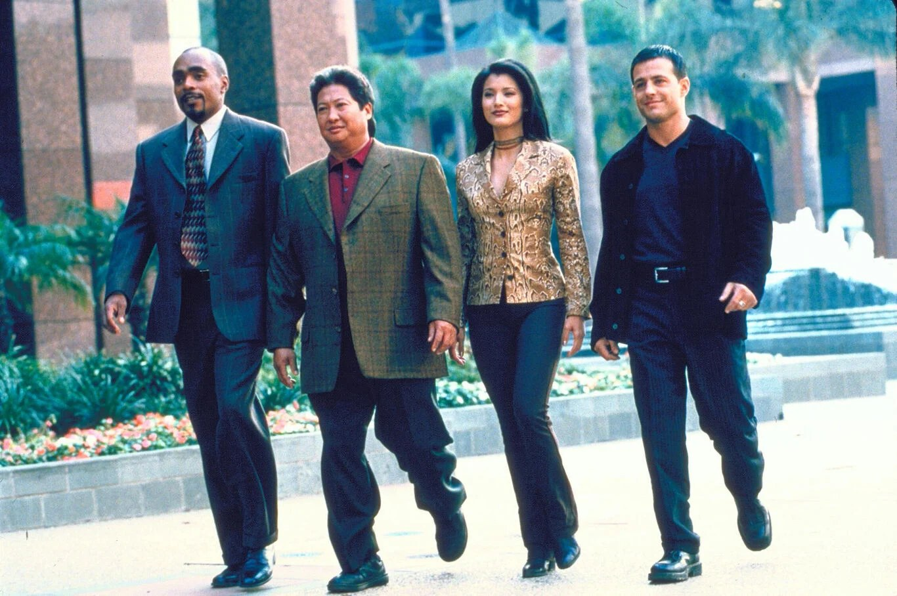
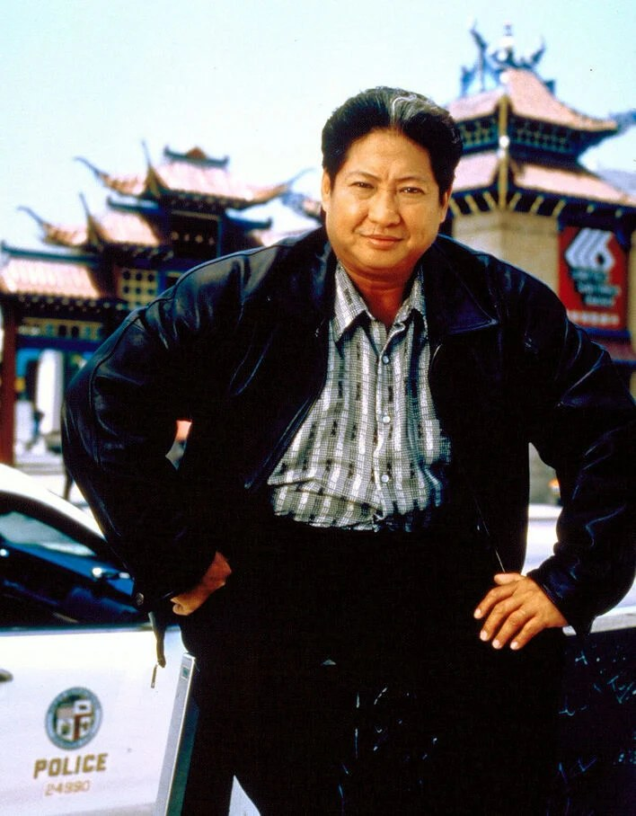
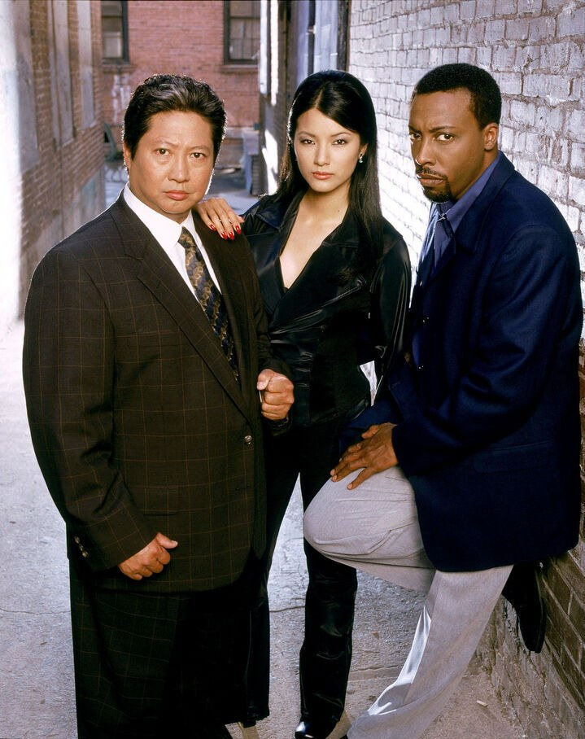

Je regardais Le Flic de Shanghaï avec mes parents, le soir sur M6, à 19 h, au moment de passer à table. Je ne ratais aucune aventure de Sammo et de toute son équipe.
Les combats étaient toujours impressionnants, et la série avait énormément d'énergie à revendre. Un super souvenir.
Ce soir, on passe à table avec Sammo.

Sammo et son équipe
Le Flic de Shanghaï (Martial Law en version originale) est une série d'action américaine créée par Carlton Cuse. Elle est diffusée sur CBS du 26 septembre 1998 au 13 mai 2000, et compte 2 saisons et 44 épisodes d'environ 43 minutes. Elle est produite par Carlton Cuse Productions, Ruddy Morgan Productions, 20th Century Fox Television et CBS Productions.
Sammo Hung joue Sammo Law, policier chinois spécialiste des arts martiaux. À ses côtés : Arsenio Hall est le lieutenant Terrell Parker, et Kelly Hu l'inspectrice Grace « Pei Pei » Chen. En saison 1, on trouve aussi Louis Mandylor (Louis Malone), Tom Wright (le capitaine Benjamin Winship) et Tammy Lauren (Dana Dickson). En saison 2, Gretchen Egolf joue le capitaine Amy Dylan.
Le point de départ : Sammo Law, policier à Shanghaï, rejoint la police de Los Angeles pour retrouver le criminel Lee Hei. Sa mission se prolonge, et il résout de nombreuses affaires avec ses coéquipiers.
En France, la série est d'abord diffusée sur M6, puis rediffusée sur Série Club, TF6, W9, 6ter et Paris Première.
Le Flic de Shanghaï est créée par Carlton Cuse pour CBS. L'idée d'une série policière inspirée de Police Story 3 : Supercop vient de Stanley Tong. Le rôle principal est d'abord proposé à Jackie Chan, ami d'enfance de Sammo Hung, qui aurait refusé pour ne pas être enfermé dans le rôle d'un policier chinois aux États-Unis. Un caméo de Chan, finalement coupé, était prévu pour l'épisode 5, et Shannon Lee apparaît dans l'épisode 8, « Take Out ».
Le tournage n'est pas simple pour Sammo Hung. À Hong Kong, il avait la maîtrise créative de ses projets ; à Los Angeles, il ne parle pas couramment anglais et supporte mal les horaires de tournage, très tôt le matin et très tard le soir.
La série est un succès surprise : Sammo Hung devient le seul acteur d'origine est-asiatique à tenir la vedette d'une série de network américain en prime time. La première saison réunit en moyenne 11 millions de téléspectateurs (57e rang), la seconde 10,08 millions (59e rang).
Pour la saison 2, Lee Goldberg et William Rabkin reprennent la production à cause de coûts qui explosent. Les personnages de Louis Malone et du capitaine Winship disparaissent, Gretchen Egolf arrive en capitaine Amy Dylan, et la série ignore en grande partie les intrigues de la saison 1. La série croise aussi d'autres séries : Demain à la une (Early Edition) et Walker, Texas Ranger (avec Chuck Norris).
CBS propose une troisième saison, mais Sammo Hung refuse s'il n'a pas le dernier mot sur les scénarios. D'après Black Belt, le coût d'environ 2 millions de dollars par épisode est la raison de l'arrêt.

Sammo Hung, alias Sammo Law
Sammo Law est policier à Shanghaï et spécialiste des arts martiaux. Il rejoint la police de Los Angeles pour retrouver Lee Hei, un criminel qu'il traque depuis longtemps.
Face à ce nouveau monde, il se retrouve en plein choc culturel. Sa mission se prolonge, et il résout de nombreuses affaires avec ses coéquipiers : Malone, Dickson et Parker. Il est aussi le mentor de Grace Chen, une jeune policière infiltrée.
Je m'arrête là : la suite se découvre à l'écran.
Le Flic de Shanghaï mélange l'action, le policier et la comédie. Son moteur : un policier chinois, expert en arts martiaux, transplanté dans le Los Angeles des années 90, et le choc culturel qui va avec.
Le casting repose sur un duo de style : Sammo Hung, figure du cinéma d'action hongkongais, et Arsenio Hall, venu de la comédie, dans le rôle du lieutenant Terrell Parker. Autour d'eux, Kelly Hu apporte à la série son personnage de jeune policière infiltrée, Grace Chen.
Comme Sammo Hung ne parle pas couramment anglais, beaucoup de scènes comptent peu ou pas de dialogue pour lui : l'action parle à sa place.
La série marque aussi les esprits par ce qu'elle représente : Sammo Hung est le seul acteur d'origine est-asiatique à tenir la vedette d'une série de network américain en prime time. C'est un succès surprise, avec 11 millions de téléspectateurs en moyenne en saison 1.
La saison 2 change de visage : de nouveaux producteurs, le départ de Louis Malone et du capitaine Winship, l'arrivée d'Amy Dylan. Le personnage d'Amy Dylan est bien accueilli, mais ce renouvellement déconcerte les spectateurs, qui ont l'impression de regarder une nouvelle série.
Mon avis : les combats étaient toujours impressionnants, et la série avait énormément d'énergie à revendre. Un super souvenir.

Sammo Hung, Kelly Hu et Arsenio Hall
La série n'a duré que deux saisons. Pourtant, Le Flic de Shanghaï est restée.
Elle a d'abord trouvé son public. Succès surprise sur CBS, elle réunit en moyenne 11 millions de téléspectateurs en saison 1 et 10 millions en saison 2. Elle s'arrête quand Sammo Hung refuse une troisième saison sans le dernier mot sur les scénarios, et que son coût, environ 2 millions de dollars par épisode, pèse trop lourd.
Elle a voyagé. Diffusée sur M6 en France, puis rediffusée sur Série Club, TF6, W9, 6ter et Paris Première, elle est aussi passée en Belgique, en Suisse, au Royaume-Uni, en Allemagne, en Hongrie, en Indonésie et au Brésil.
Elle a aussi continué d'exister en vidéo : des VCD dès 2000, puis une intégrale en 10 disques, Martial Law: The Complete Collection, sortie le 30 août 2016, qui inclut les épisodes croisés avec Demain à la une et Walker, Texas Ranger.
Mais un classique, c'est aussi une affaire de mémoire. Pour moi, c'est le soir, sur M6, avec mes parents, au moment de passer à table.
Parce que c'est une série d'action sans détour : un policier hors du commun, ses coéquipiers, une affaire par épisode. Chaque épisode dure environ 43 minutes, et on sait où l'on va dès les premières scènes.
Parce que Sammo Hung est le cœur de la série. Seul acteur d'origine est-asiatique à tenir la vedette d'une série de network américain en prime time, il porte la série par ses combats : beaucoup de ses scènes comptent peu ou pas de dialogue, c'est l'action qui parle.
Parce que c'est un mélange rare : de l'action, du policier et de la comédie, avec un policier chinois transplanté à Los Angeles et le choc culturel qui va avec.
Parce que la série a de la matière : 44 épisodes, des invités surprise (Chuck Norris dans un épisode croisé avec Walker, Texas Ranger, Mark Dacascos, James Hong, Mako, Mario Van Peebles) et un casting qui évolue.
Et parce que certaines séries se retrouvent comme on retrouve une cassette : on appuie sur lecture, et on est de nouveau à table avec ses parents, un soir sur M6.
Le Flic de Shanghaï n'a duré que deux saisons, mais elle a trouvé son public, et elle l'a gardé.
Pour moi, c'est un rendez-vous du soir, sur M6, avec mes parents, au moment de passer à table, devant les aventures de Sammo et de toute son équipe. Je n'ai pas eu l'occasion de la revoir depuis, mais j'en conserve un excellent souvenir.
Et je pense que si je la visionnais de nouveau un jour, rien ne changerait.
La cassette est dans le lecteur. On rembobine.
Titre original
Martial Law
Pays
États-Unis
Genre
Action · Policier · Comédie
Diffusion
CBS, 1998–2000 (2 saisons, 44 épisodes)
Créateur
Carlton Cuse
Production
20th Century Fox Television · CBS Productions
En France
M6, puis Série Club, TF6, W9, 6ter, Paris Première
Fil conducteur
Séries TV cultes — EP. 11
SOMEDAY — SÉRIES EP. 11